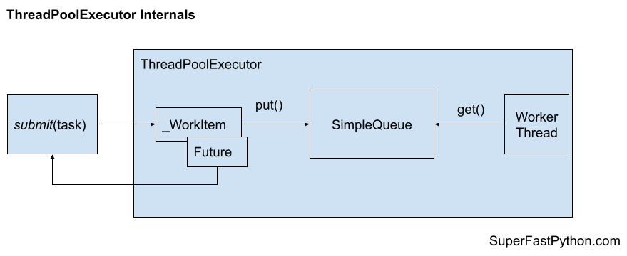

How Does the ThreadPoolExecutor Work in Python
Effective use of the ThreadPoolExecutor in Python requires some knowledge of how it works internally.
In this tutorial, you will discover how the ThreadPoolExecutor works so you can use it better in your projects.
Let's get started.
How Does ThreadPoolExecutor Work Internally?
It is important to pause for a moment and look at how the ThreadPoolExecutor works internally.
The internal workings of the class impact how we use the thread pool and the behavior we can expect, specifically around cancelling tasks.
Without this knowledge, some of the behavior of the thread pool may appear confusing from the outside.
You can see the source code for the ThreadPoolExecutor and the base class here:
There is a lot we could learn about how the thread pool works internally, but we will limit ourselves to the most critical aspects.
There are two aspects that you need to consider about the internal operation of the ThreadPoolExecutor class: how tasks are sent into the pool and how worker threads are created.
Tasks Are Added to an Internal Queue
Tasks are sent into the thread pool by adding them to an internal queue.
Recall that a queue is a data structure where items are added to one end and retrieved from the other in a first-in, first-out (FIFO) manner by default.
The queue is a SimpleQueue object which is a thread safe queue implementation. This means we can add work to the pool from any thread and the queue of work will not become corrupt from concurrent put() and get() operations.
You can learn more about Python queues here:
The use of a task queue explains the distinction between tasks that have been added or scheduled but are not yet running, and that these tasks can be cancelled.
Recall that the thread pool has a fixed number of worker threads. The number of tasks on the queue may exceed the current number of threads, or the current number of available threads, in which case tasks may sit in a scheduled state for some time, allowing them to be cancelled either directly or en masse when shutting down the pool.
A task is wrapped in an internal object called a _WorkItem. This captures the details such as the function to call, the arguments, the associated Future object, and handling of exceptions if they occur during task execution.

This explains how an exception within a task does not bring down the entire thread pool, but can be checked for and accessed after the task has completed.
When a _WorkItem object is retrieved from the queue by a worker thread, it will check if the task has been cancelled before it is executed. If so, it will return immediately and do not execute the content of the task.
This explains internally how cancellation is implemented by the thread pool and why we cannot cancel a running task.
Worker Threads Are Created as Needed
Worker threads are not created when the thread pool is created.
Instead, worker threads are created on-demand or just-in-time.
Each time a task is added to the internal queue, the thread pool will check if the number of active threads is less than the upper limit of threads supported by the thread pool. If so, an additional thread is created to handle the new work.
Once a thread has completed a task, it will wait on the queue for new work to arrive. As new work arrives, all threads waiting on the queue will be notified and one will consume the unit of work and start executing it.
These two points show how the pool will only ever create new threads until the limit is reached and how threads will be reused, waiting for new tasks without consuming computational resources.
It also shows that the thread pool will not release threads after a fixed number of units of work. Perhaps this would be a nice addition to the API in the future.
Takeaways
You now know how the ThreadPoolExecutor in Python works internally.
If you enjoyed this tutorial, you will love my book: Python ThreadPoolExecutor Jump-Start. It covers everything you need to master the topic with hands-on examples and clear explanations.